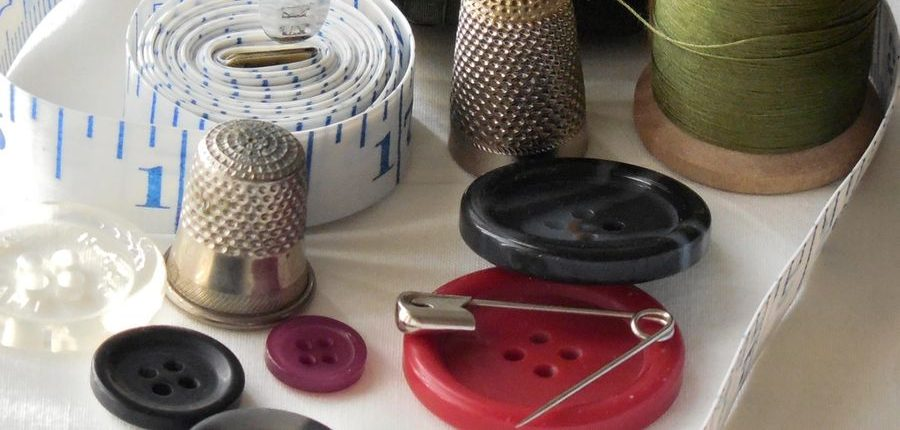

Ana sayfa / Hizmetler
Tadilat ve dikiş defteri
Terzilerde en sık yapılan işleri bir sipariş defteri gibi satır satır yazdık. Yaptırmak istediklerinizi işaretleyin; seçtikleriniz prova randevunuzun mesajına kendiliğinden eklenir.
Listedeki her iş her parçaya uymayabilir. Kesin cevabı parçayı görünce veririz; "önce sorun" notu olan satırlar için gelmeden yazmanız yeterli.
Pantolon kot, kumaş, takım
Ceket ve dış giyim ceket, mont, kaban
Gömlek klasik, spor
Elbise, etek, abiye günlük ve özel gün
Fermuar, düğme, onarım küçük ama can sıkan işler
Perde ölçüye göre
Defterde bu aramaya uyan satır yok. Aradığınız işi telefonla ya da WhatsApp'tan sorabilirsiniz.
0 kalem deftere yazıldı
Randevuya aktarınKişiye özel dikim bu defterin ayrı bir bölümü: ölçü, prova ve teslim sürecini okuyun.
Bir giysi ne kadar değişir?
Her şey daraltılmaz, her şey uzatılmaz. Terziye gitmeden önce bilmeniz iyi olan genel kurallar şunlar.
Rahat yapılır
- Paça ve etek boyunu kısaltmak
- Yalancı ilikli ceket kolunu kısaltmak
- Pantolon belini bir miktar daraltmak
- Gömleği yandan ya da pensle daraltmak
- Fermuar, düğme, astar yenilemek
İçerideki paya bağlı
- Paçayı, kolu ya da eteği uzatmak: içe kıvrılmış kumaş kadar
- Beli ve bedeni genişletmek: dikiş payı kadar
- Uzatılan yerde eski kat izi kalabilir; koyu ve dokulu kumaşta daha az belli olur
- Ceket boyunu kısaltmak: cep hizası elverdiği kadar
Zor ya da önerilmez
- Ceketin omuz genişliğini değiştirmek: giysinin iskeleti omuzdur
- İki bedenden fazla küçültmek: cepler ve yaka oranı kayar
- Kısa gelen ceketi uzatmak
- Yıpranmış, incelmiş kumaşı gergin bir kalıba oturtmak
Bunlar genel terzilik bilgisidir. Sizin parçanızda hangisinin geçerli olduğunu, içindeki paya ve kumaşa bakarak söyleriz.
Paça nerede bitsin?
"Paçayı ne kadar kısaltalım?" sorusunun cevabı aslında bir tercihtir. Dört kırımı karşılaştırın, size uyanı randevu notunuza ekleyin.
Yarım kırım
Önde tek ve net bir kırım oluşur, arkada paça topuğun başladığı yere iner. Klasik takım elbise boyudur; çoğu ayakkabıyla uyumludur.
Tadilata gelirken yanınızda olsun
- O parçayla giyeceğiniz ayakkabıPaça ve etek boyu topuğa göre değişir; spor ayakkabıyla ölçülen boy, klasik ayakkabıda kısa kalır.
- Ceket için bir gömlekKol boyu, manşetin ceket kolundan ne kadar görüneceğine bakılarak işaretlenir.
- Kemer ya da askıPantolonu günlük hayatta taşıdığınız hizada ölçmek için.
- İyi oturan bir örnek parça"Bunun gibi olsun" diyebileceğiniz bir pantolon ya da gömlek tarif etmekten kolaydır.
- Temiz ve mümkünse yıkanmış parçaPamuklu ve kot kumaş ilk yıkamada çekebilir; boyu yıkamadan sonra aldırmak daha güvenlidir.

Tadilat hakkında sık sorulanlar
Tadilat ne kadar sürer?
Basit işler çoğunlukla kısa sürer; yoğunluğa göre teslim gününü söyleriz. Belirli bir güne yetişmesi gerekiyorsa bunu ilk mesajınızda yazın.
Kot pantolonun paçası orijinal dikişiyle kısaltılabilir mi?
Bu, terzilikte bilinen bir yöntemdir: fabrikada taşlanmış paça kenarı kesilir ve yeni boya yeniden eklenir, böylece yıpratma görünümü kaybolmaz. Her kota uygun olmayabilir; parçayı görünce söyleriz.
Yeni aldığım pantolonu yıkamadan mı kısalttırmalıyım?
Pamuklu ve kot parçalar ilk yıkamada bir miktar çekebilir. Önce bir kez yıkayıp sonra kısalttırmak, boyun sonradan kısa kalması riskini azaltır.
Kilo verdim; takım elbisem daraltılır mı?
Bir beden civarındaki fark çoğu zaman yan ve arka dikişlerden alınır. Fark büyüdükçe ceplerin yeri ve omuz oranı bozulmaya başlar; o noktada yeniden dikim daha doğru bir yol olabilir.
Listede olmayan bir iş için ne yapmalıyım?
Sorun, bilgi verelim. Parçanın ve sorunlu yerin fotoğrafını WhatsApp'tan göndermek, tarif etmekten çoğu zaman daha hızlıdır.
Seçtiniz mi? Sıra gün seçmekte
Deftere yazdıklarınız randevu mesajına taşınır; siz yalnız günü ve saati seçersiniz.